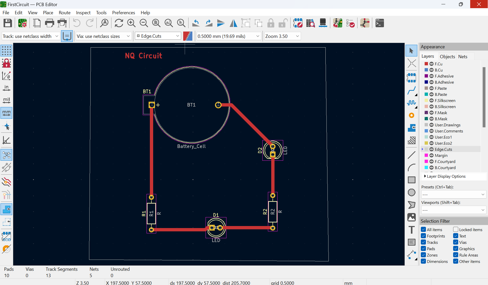

This is the basic circuit model I made using the KiCad software. This was one of my first times with this software so learning all the gimmicks it had was a bit tough at first such as learning how to set footprints correctly, dealing with the ratsnest in general, and a lot more that I had to grow accustomed to in this first use. As you can see this was a very rudementary circuit only including three main components which were the LED, resistor, and single-celled battery.
This is the more "complex" circuit as I had to include an extra resistor and LED light because of the paramaters of the assignment but the process was very similar to the previous circuit. One issue I encountered with setting this up was dealing with the ratsnest as one of my resistors was not connecting to the piece I wanted it to so I had to learn how to fix that quickly. The end product is a pretty simple and clean circuit as you can see above and I am happy to say that I know the basics of this program and how to construct a circuit.